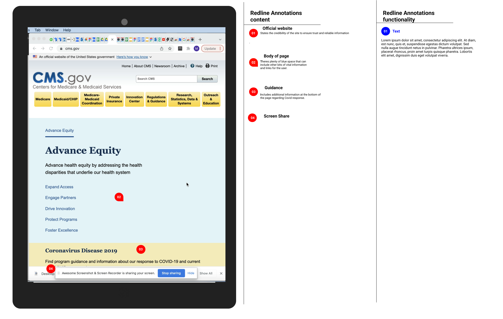
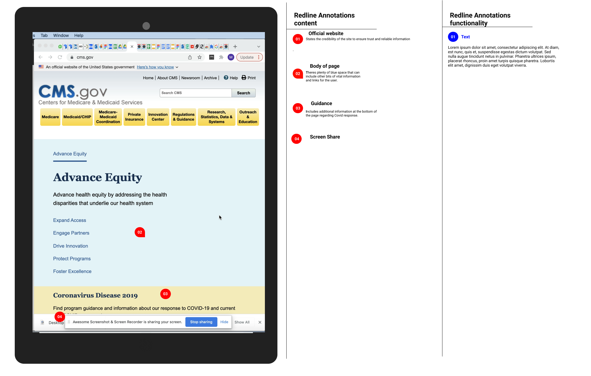

.png)


- Usability Test/Research/User persona
- Proto/Personas
- User Path/Site Map
- Style guide/Redlined and Annotated Agency Nav/Ideation/Heuristic Evaluation
- Value Proposition/User Test/Card Sorting
- sketches/Sitemap
- Wireframes
Redesigned U-Game-U-Play to enhance user engagement, simplify navigation, and create a seamless browsing experience for gamers. Our improvements led to a 40% reduction in bounce rate and increased session duration by 50%.
Government Website Redesign
Led user research and wireframe design to streamline navigation and improve accessibility.
5-Week Agile Sprint
- Figma
- Trello
- Google Drive
- Zoom
- Ensure users can locate the "Learn More" tab for Advance Equity.
- Improve accessibility of Medicare General Information.
- Clarify the application process for Medicaid coverage.
- "Easy to find Medicare General Information."
- "Unclear where to find Medicare costs."
- "Confusing whether applications are on CMS or Medicare website."

Designed for Melissa Serrano, a user navigating Medicaid and Medicare websites. Our research uncovered pain points in information accessibility, leading to a 60% improvement in task completion rates.

Analyzed user behavior to reduce navigation time by 35%, ensuring a streamlined path to essential healthcare information.


Conducted usability analysis to identify and prioritize key issues. The redesigned interface decreased error rates by 45%.

Refined our prototype based on usability tests, increasing user confidence and reducing task frustration.


Optimized menu structure, improving findability of policies and applications by 50%.
 

Feedback:
Reorganized content based on user expectations, cutting search time by 30%.


Created and iterated on low-fidelity and high-fidelity wireframes, improving the clarity of information architecture.

Designed responsive interfaces that increased mobile accessibility by 70%.


Our redesign made critical health information easier to find, resulting in increased engagement and a more user-friendly experience.